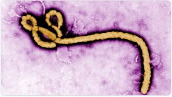
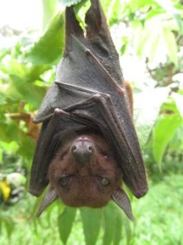

Case study: an outbreak in Angola
The Australian Centre for Disease Control (CDC) was established in January 2024 in response to recent disease outbreaks (COVID-19, mpox and bird flu) and natural disasters.
The Australian Government has decided it needs a specialised strike team to jump into action whenever an outbreak hits. This team will be experts in highly infectious pathogenic agents, and will specialise in identifying the pathogen and treating people when an outbreak occurs.
A call has just come in from a physician in Angola. She reports that at least one hundred people have become ill and are dying from a mysterious infection. Their symptoms include fever, fatigue and headaches, and in some cases bleeding. The infection is highly contagious, but she is unsure exactly how it is transmitted.
The CDC strike team packs the necessary supplies, including a mobile lab for routine testing and Biosafety Level 4 suits, which protect against exposure to airborne pathogens. They fly to Angola the next day.
The situation in Angola is devastating. Hundreds of people are sick, and about 50% of the people with the disease die. In the villages, temporary hospitals have been made from tents. Even the caregivers (family and friends) are frightened to get too close to the patients to give them food and water. The patients all have the same symptoms: fever, diarrhoea, vomiting and bleeding. The disease seems to spread most rapidly in families living close together.
The strike team decides the first step is to identify what type of pathogen they are dealing with. Using a blood sample from one of the victims, they do some basic tests in the mobile lab. The results:
- A transmission electron microscope image of the pathogen (below).
- The sample was plated on agar: negative result. No colonies appeared.
- Pathogen RNA was isolated from the blood.

They have identified the disease as Ebola haemorrhagic fever. The first infection was probably passed on from fruit bats that live in the jungles around the villages.

Questions (22 marks)
When the CDC strike team first arrived in Angola, what precautions would the team need to take to protect themselves from the unknown disease?
- Wear PPE: gloves, biosafety suits, masks, etc.
- Set up an isolation area where sick patients are kept.
Any other suitable answer is accepted, as long as it relates to the team protecting themselves.
The disease is identified as Ebola haemorrhagic fever. Is it an infectious disease? Give evidence from the case study to support your answer.
Yes, it is an infectious disease (1 mark).
The case study says it is highly contagious, which means it is easily spread and therefore infectious. OR: it spreads more easily in families living close together, which suggests it is infectious (1 mark).
Is Ebola haemorrhagic fever virulent? Explain.
Virulence is the ability of a pathogen to damage (cause severe disease in) the host (1 mark).
About 50% of patients die, which is a very high death rate, so the disease is very virulent (1 mark).
What type of pathogen causes Ebola haemorrhagic fever? Use evidence from the case study to support your answer.
A virus (1 mark).
Any one piece of evidence (1 mark): it can only be seen with an electron microscope; the pathogen has RNA; it does not form colonies on agar, so it cannot be a bacterium.
If the pathogen was a bacterium, give 2 tests that could be done to identify the bacteria.
- Plate it on agar and look at the shape and colour of the colonies (1 mark).
- Observe it under a light microscope to see its shape and size (1 mark). (A Gram stain is also a suitable test.)
What treatment(s) should be given to patients suffering from Ebola haemorrhagic fever?
- Antiviral drugs (1 mark). (Antibiotics would not work, because it is a virus.)
- Plenty of fluids and rest (1 mark).
Would the outbreak in Angola be classified as endemic, epidemic or pandemic? Explain.
Epidemic (1 mark), because it is an unexpected, sudden increase in the number of cases in a specific geographical area (1 mark).
From the case study, what mode of transmission does the pathogen use to pass from an infected person to an unaffected person? Use evidence to support your answer.
Direct (close) contact (accepted: airborne/droplets) (1 mark).
The newly infected people are usually those living close to an infected patient, so transmission must be through close contact (1 mark).
(Ebola is in fact spread by direct contact with an infected person's blood or other body fluids.)
One symptom patients experienced was fever, which is an important part of the body's second line of defence. Why does body temperature rise in response to the pathogen?
The body's temperature is set higher to kill (or slow the growth of) the pathogen, or to help activate the immune system.
Some patients were able to recover from the disease. What role do B cells play in their recovery from the invading pathogen?
When activated, B cells specific to the pathogen divide to form plasma cells and memory B cells (1 mark).
Plasma cells produce many antibodies specific to the antigen. The antibodies stick to the pathogen and mark it for phagocytes to engulf and digest (1 mark).
OR: memory B cells remain to respond quickly if the pathogen returns, so the person is immune (1 mark).
After the outbreak has been controlled, what advice would the CDC strike team give the Angolan Government to make sure this outbreak doesn't happen again?
Any three suitable pieces of advice, for example:
- Develop and give vaccinations against the Ebola virus.
- Identify and deal with the original source of the virus that was passed to humans (e.g. contact with fruit bats).
- If the disease appears again, isolate patients straight away.
- Quarantine any suspected close contacts of infected patients.